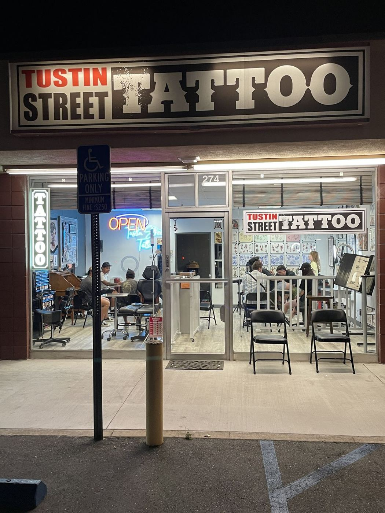
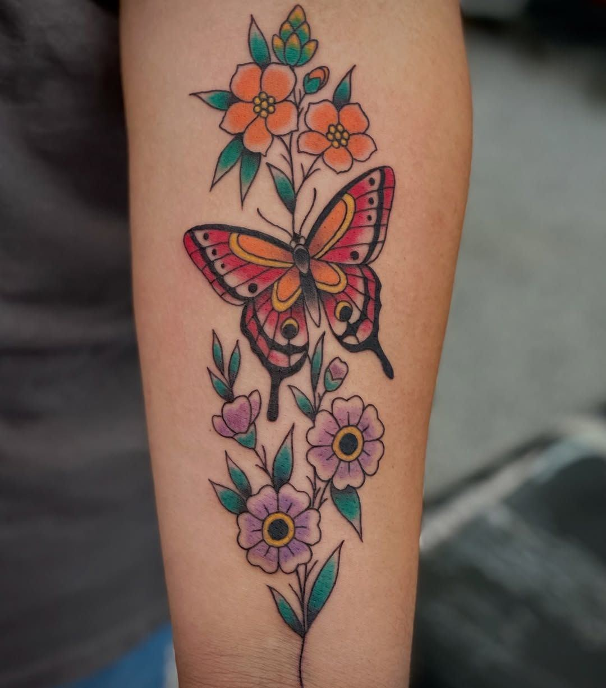
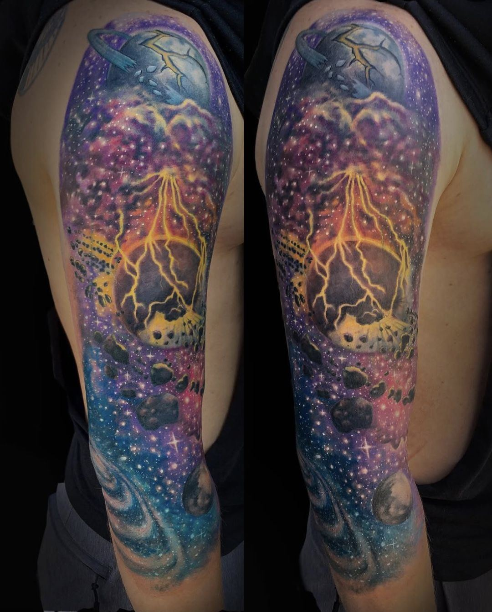
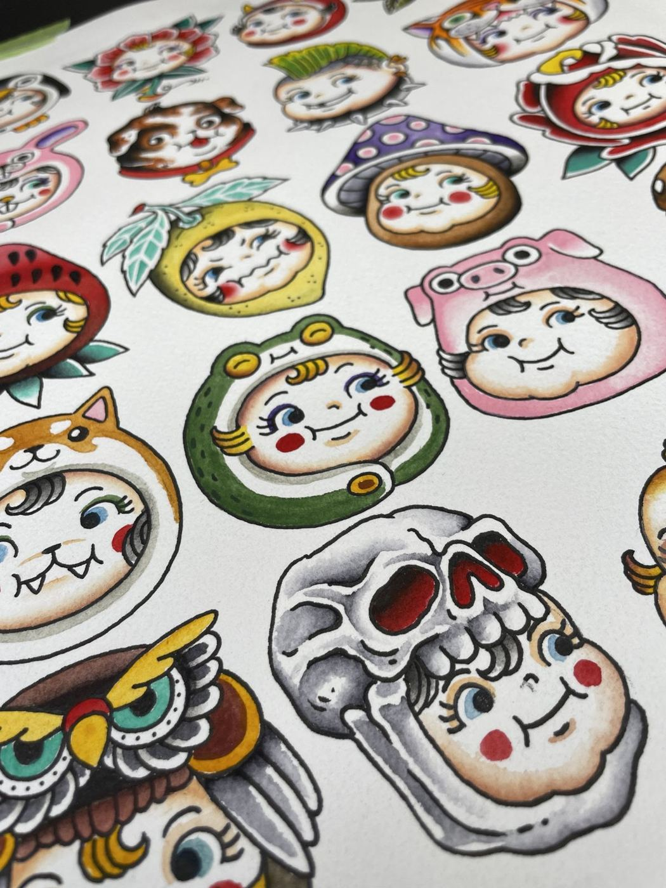
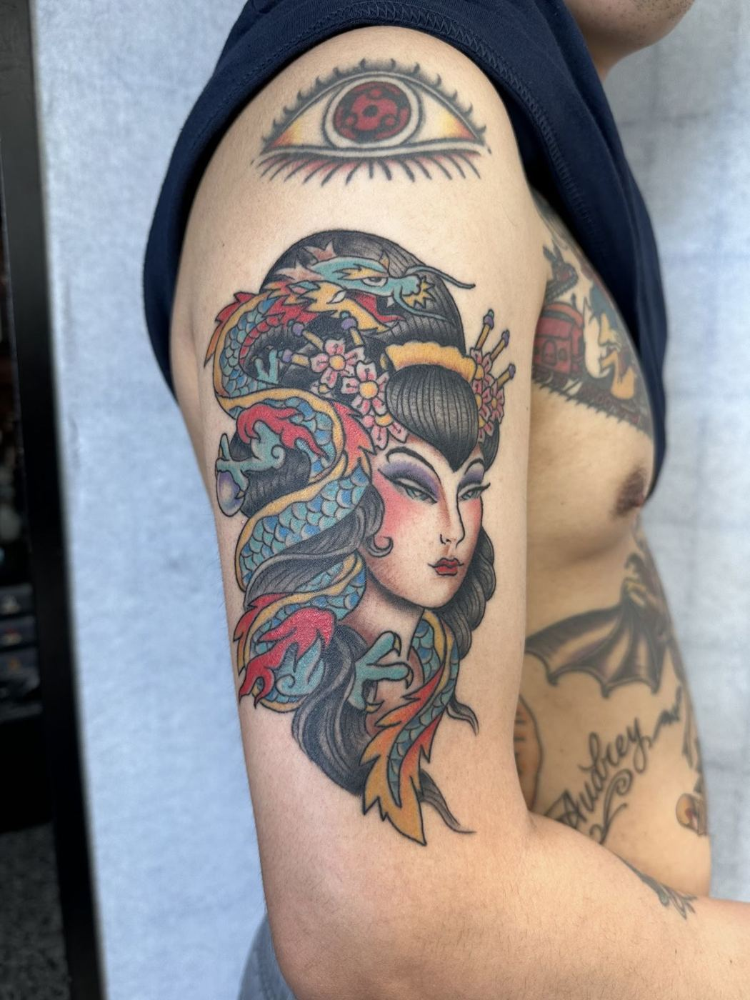
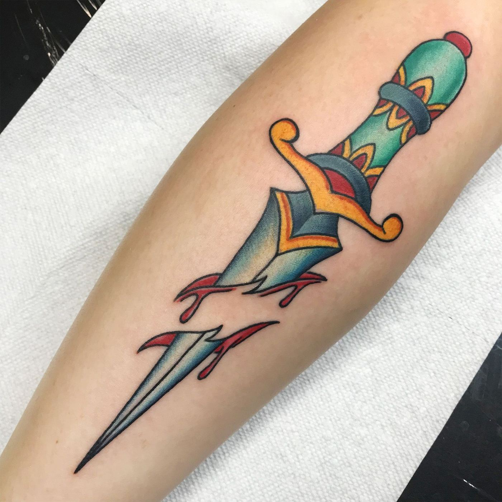
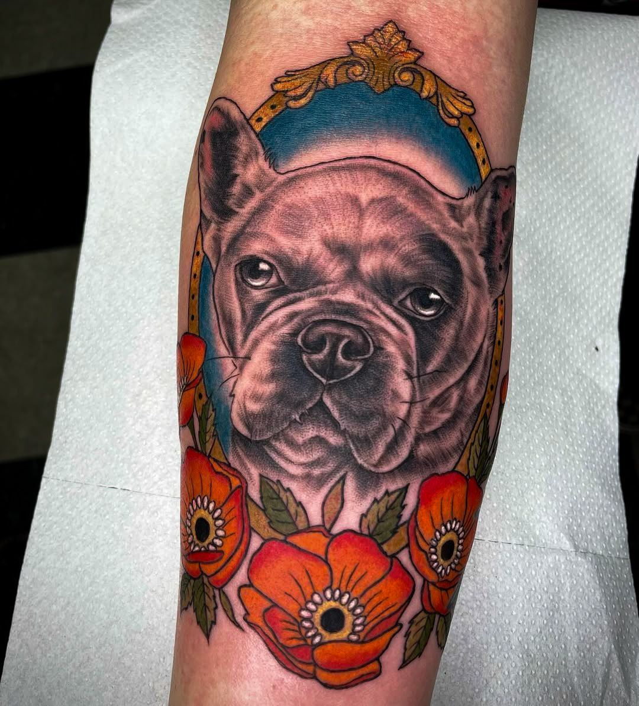
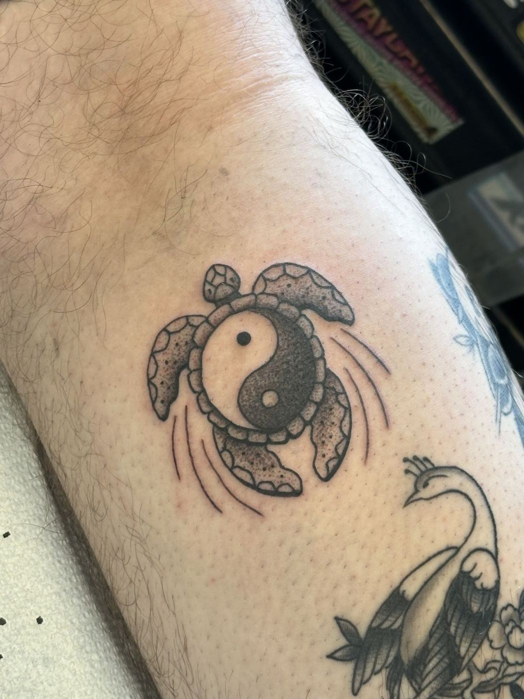

Tustin Street Tattoo
A clean, friendly street shop where your idea gets drawn up and placed just right before the needle starts.

Clean lines. Good vibes.
Artists draw up what you want and position it before they start.
Expert line work and gorgeous shading, say clients.
Patient, empathetic artists for nervous first-timers.
Mother-daughter and family sessions are a regular thing.
Fresh work







Clients say
Honestly one of the best shops I’ve been to. The whole gang is super friendly, talented and down to work with any ideas you have. I’ve had work done by made and kein and it’s some of my favorite work. Tustin street tattoo is worth the visit.
This place is awesome. I’ve gotten a lot of work done here and I think they are the best in town. I got all my work done by Kein and he’s great. If you want good tattoos I would definitely check this place out.
My daughter and I have gotten quite a few tattoos from Chris. His work is amazing and he always makes sure to draw up what you want and position it perfectly before tattooing you. Great artist and a super cool guy, funny and easy to talk to. Going back in a week to finish my latest work from him, and will def be going back in the near future for more pieces.